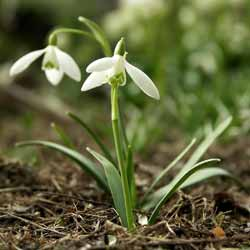

Snowdrop
From Wikipedia, the free encyclopedia.
Snowdrop is the common name for members of the genus Galanthus, a small genus of about 20 species in the family Amaryllidaceae; snowdrops are among the first bulbs to bloom in spring, although certain species flower in late autumn and winter.
Galanthus nivalis is the best-known and most widespread representative of the genus Galanthus. It is native to a large area of Europe, stretching from the Pyrenees in the west, through France and Germany to Poland in the north, Italy, Northern Greece and European Turkey. It has been introduced and is widely naturalised elsewhere. Although it is often thought of as a British native wild flower, or to have been brought to the British Isles by the Romans, it was probably introduced around the early sixteenth century.
All species of Galanthus are perennial, herbaceous plants which grow from bulbs. The flower has no petals: it consists of six tepals, the outer three being larger and more convex than the inner series. An important feature which helps to distinguish between species (and to help to determine the parentage of hybrids) is their "vernation" (the arrangement of the emerging leaves relative to each other). This can be "applanate", "supervolute" or "explicative". In applanate vernation the two leaf blades are pressed flat to each other within the bud and as they emerge; explicative leaves are also pressed flat against each other, but the edges of the leaves are folded back or sometimes rolled; in supervolute plants one leaf is tightly clasped around the other within the bud and generally remains at the point where the leaves emerge from the soil.